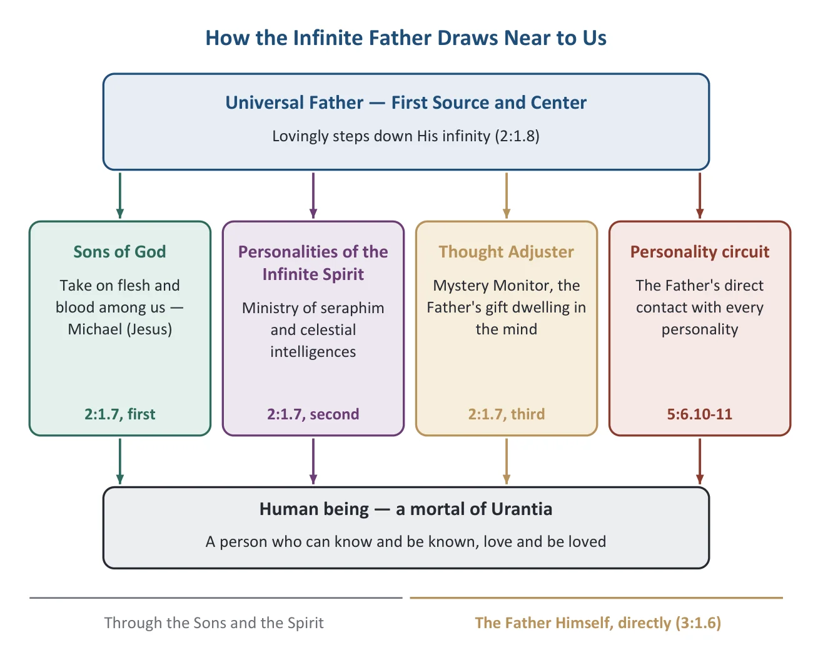
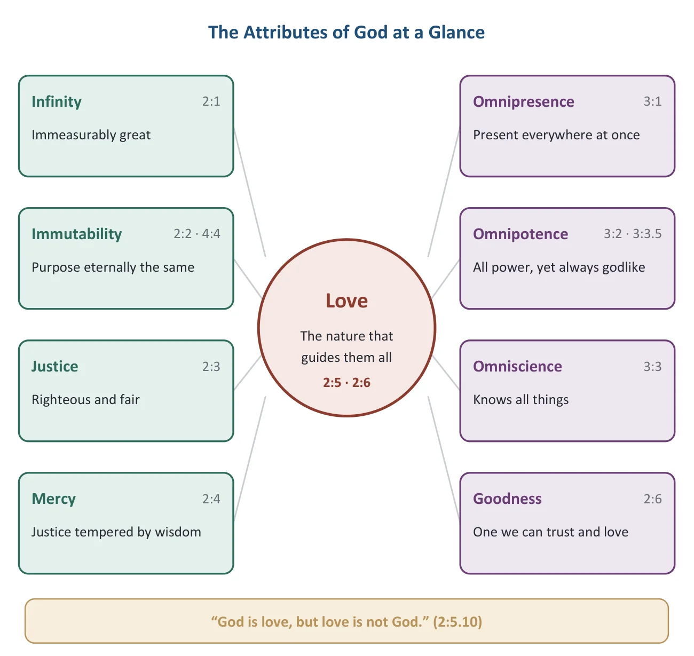
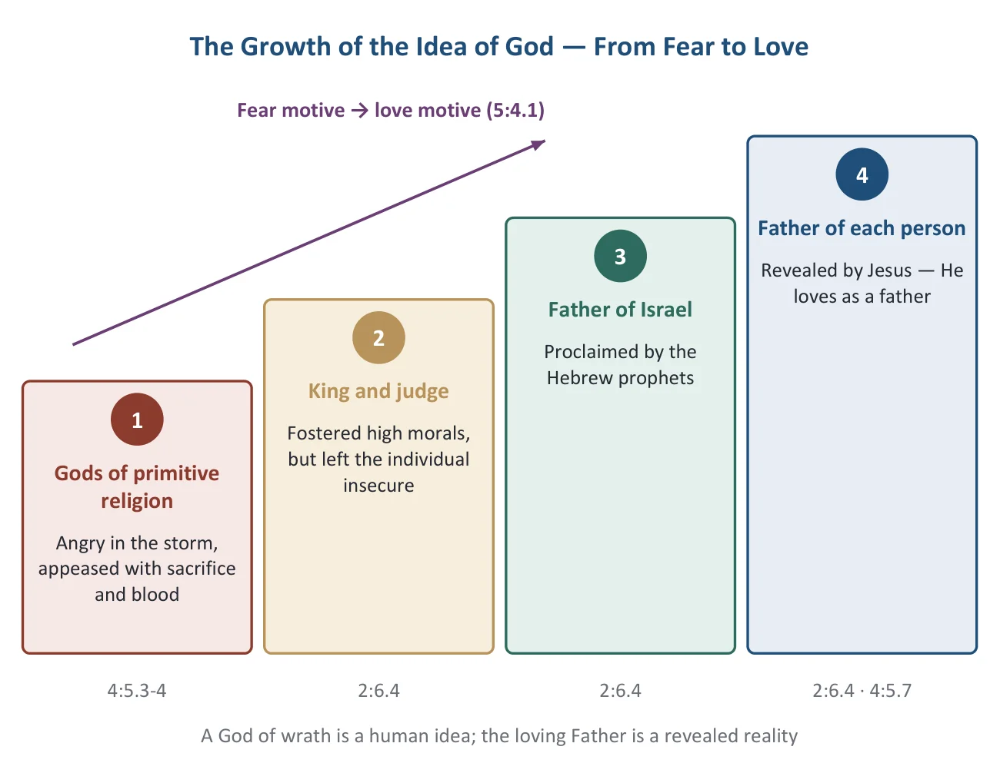
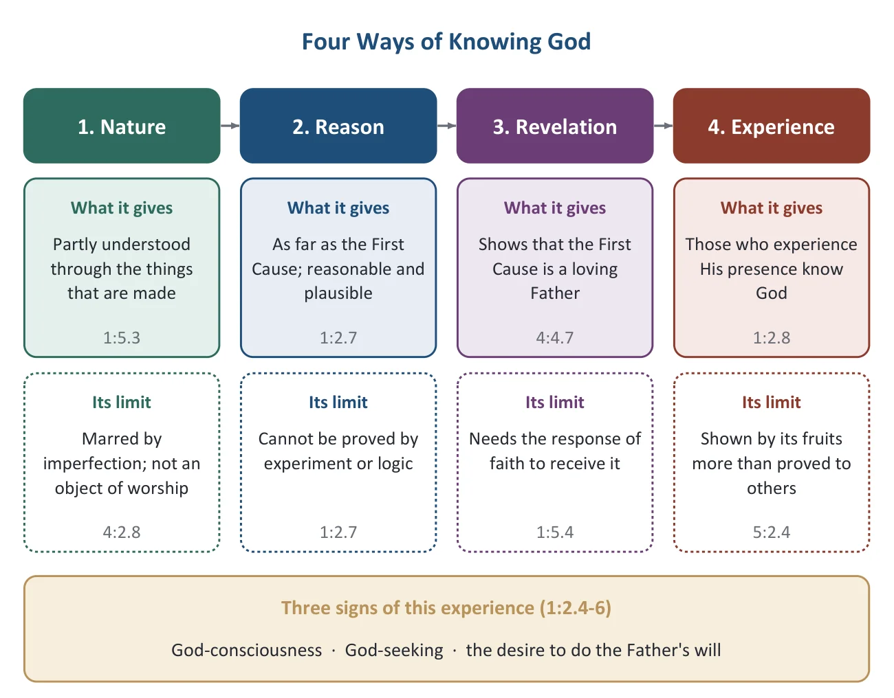

El Padre Universal: ¿quién es Dios?
Lectura: Documento 1 · Documento 2 · Documento 3 · Documento 4 · Documento 5

Los cinco primeros documentos de El libro de Urantia presentan a Dios como Aquel que es infinito y, sin embargo, es una persona que puede entrar en comunión con nosotros: un Padre. Dios está presente en todas partes, lo sabe todo y no cambia, pero el amor guía cada uno de estos atributos, y no hay ningún Dios de ira al que haya que aplacar con sacrificios. A este Dios se le conoce por la experiencia más que por la demostración, y él ya vive en cada persona mediante el espíritu que ha enviado.
Relato inicial
Pregúntele a una niña de cinco años cómo es su padre. Apenas sabe qué hace él en el trabajo ni cuánto tiene. Sin embargo, responde sin dudar un instante: «Mi papá me quiere». No entiende del todo a su padre, pero lo conoce.
Una persona ante Dios se parece mucho a esa niña. Los documentos 1 a 5 están llenos de palabras grandes —infinito, eterno, absoluto— y no pasa nada si no se comprenden todas. El Consejero Divino que escribió estos cinco documentos quiere decir, en el fondo, una sola frase: Dios es tu Padre.
Esta semana vemos, paso a paso, cómo es este Padre y cómo podemos llegar a conocerlo.
1. El Infinito se encuentra con nosotros como persona
La Primera Fuente y Centro
El nombre que El libro de Urantia usa con más frecuencia para Dios es «el Padre Universal», y el nombre más extendido en todo el universo es «la Primera Fuente y Centro». Todo procede de él y todo gira a su alrededor.
EL Padre Universal es el Dios de toda la creación, la Primera Fuente y Centro de todas las cosas y todos los seres. Pensad primero en Dios como creador, luego, como controlador, y finalmente, como sustentador infinito.1:0.1
Creador, controlador, sustentador: Dios hizo el universo, lo gobierna y lo mantiene en la existencia todavía hoy. Sin embargo, el documento 1 no da mucha importancia al nombre en sí.
El nombre que se le dé es de poca importancia; lo significativo es que debéis conocerle y aspirar a ser semejante a él.1:1.6
Dios es una persona
Decir que Dios es infinito puede hacer fácilmente que parezca una fuerza fría o una ley inmensa. El documento 1 sale primero al paso de ese malentendido.
No permitáis que la magnitud de Dios, su infinitud, obscurezca ni eclipse su personalidad. «Aquel que concibió el oído, ¿no oirá? Aquel que formó el ojo, ¿no verá?» El Padre Universal es la cumbre de la personalidad divina1:5.1
Personalidad es la palabra clave de esta semana. Decir que Dios es una persona no significa que tenga un cuerpo como el nuestro. Significa que es consciente de sí mismo, que tiene voluntad y propósito, y que nos conoce y puede compartir comunión con nosotros.
Pese a que Dios es un poder eterno, una presencia majestuosa, un ideal trascendente, y un espíritu glorioso, aunque es todo esto e infinitamente más, es sin embargo verdadera y eternamente una personalidad perfecta de Creador, una persona que puede «conocer y ser conocida», que puede «amar y ser amada», alguien que puede mostrarnos amistad; en tanto vosotros podéis ser conocidos, así como otros seres humanos han sido conocidos, como amigos de Dios.1:5.8
La frase asciende de una expresión elevada a otra, luego gira en las palabras «sin embargo» y llega a «amigos». La sección 7 del documento 1 explica por qué la personalidad importa tanto.
El concepto de la personalidad de la Deidad facilita la comunidad; favorece la adoración inteligente; promueve la confianza refrescante. Puede haber interacciónes entre cosas no personales, pero no puede haber comunidad. La relación de comunidad entre padre e hijo, así como entre Dios y el hombre, no puede ser disfrutada a menos que ambos sean personas.1:7.1
El sol y la Tierra se atraen mutuamente, pero no se echan de menos. Como Dios y el hombre son ambos personas, entre ellos es posible algo más que la atracción: la comunión. Y esa comunión no es un camino en el que el yo desaparece.
El hombre no logra la unión con Dios como una gota de agua podría encontrar unidad con el océano. El hombre alcanza la unión divina mediante una comunión espiritual progresiva y recíproca, una relación de personalidad con el Dios personal, un creciente logro de la naturaleza divina a través de una conformidad, inteligente y sincera con la voluntad divina.1:7.2
Cuando una gota de agua se funde en el mar, la gota deja de existir. La unidad que describe El libro de Urantia es distinta. Cada persona sigue siendo ella misma hasta el final, y se va pareciendo cada vez más al Padre.
Cómo se acerca el Infinito
Pero ¿cómo puede el Infinito entrar en comunión con un ser humano finito? El documento 2 responde que Dios, por amor, atenúa su propia infinitud.
De estos modos y de muchos otros, de maneras desconocidas para vosotros y que escapan completamente a la comprensión finita, el Padre Paradisiaco voluntaria y amorosamente condesciende y de otras maneras modifica, diluye y atenua su infinitud a fin de poder acercarse a las mentes finitas de sus hijos criaturas.2:1.8
«Estos modos» son los tres caminos nombrados en el párrafo inmediatamente anterior.
primero, en las personalidades de los Hijos de Dios Paradisiacos, quienes, aunque perfectos en divinidad, también participan a menudo de la naturaleza de carne y hueso misma de las razas planetarias, haciéndose uno de vosotros y uno con vosotros … Y segundo, existen las personalidades del Espíritu Infinito, las varias órdenes de huestes seráficas y otras inteligencias celestiales que se acercan a los seres materiales de origen inferior y de tantos modos les ministran y sirven. Y tercero, existen los impersonales Monitores Misteriosos, los Ajustadores del Pensamiento, el don auténtico del gran Dios mismo, enviados para morar en seres como los humanos de Urantia, enviados sin anuncio ni explicación.2:1.7
El documento 5 añade uno más: el circuito de personalidad, que une directamente cada personalidad con el Padre (5:6.10). La figura siguiente reúne estos caminos en un solo cuadro.

Palabras nuevas
- Primera Fuente y Centro: el nombre más usado para Dios en todo el universo. Significa que todas las cosas proceden de él y giran a su alrededor.
- Personalidad: lo que hace que un ser sea consciente de sí mismo, capaz de elegir y capaz de compartir comunión con otros. Solo el Padre Universal otorga la personalidad (5:6.4).
- Hijo Creador: un Hijo de Dios que hace y gobierna un universo local. Micael de Nebadon, el Hijo Creador de nuestro universo, vino a este mundo como Jesús.
- Hijo Eterno y Espíritu Infinito: las dos Personas que, con el Padre Universal, forman la Trinidad del Paraíso. Los conoceremos en la semana 3.
2. Los atributos de Dios: presente en todas partes, omnisciente, inmutable
Los documentos 2 y 3 repasan uno a uno los atributos de Dios, los rasgos que muestran qué clase de Ser es Dios. Con cada palabra, El libro de Urantia explica también lo que significa para nuestra relación con él.

Presente en todas partes
La capacidad del Padre Universal de estar presente al mismo tiempo en todas partes, constituye su omnipresencia. Sólo Dios puede estar en dos lugares, en innumerables lugares, al mismo tiempo.3:1.1
Si Dios está en todas partes, ¿por qué algunas personas lo sienten cerca y otras lo sienten lejos? El documento 3 responde que la diferencia está de nuestro lado, no del suyo.
Las fluctuaciones de la presencia del Padre no se deben a la mutabilidad de Dios. El Padre no se retira en reclusión porque haya sido desairado; su afecto no se enajena debido a la mala acción de la criatura. Más bien, sus hijos, habiendo sido dotados con el poder de elección (respecto de él), en el ejercicio de esa elección, determinan directamente el grado y limitaciones de la influencia divina del Padre en sus propios corazones y almas.3:1.12
La luz del sol cae por igual sobre todas las casas, pero la claridad de una habitación depende de cuánto se abran sus ventanas. Así es la presencia de Dios.
Omnisciente
Que Dios lo sepa todo puede sonar como un ojo que vigila y toma nota. El documento 3 nos invita a oírlo más bien como un consuelo.
Y debería ser consuelo auténtico para todo ser humano comprender que «él conoce vuestro cuerpo; y recuerda que sois polvo». Jesús, al hablar del Dios viviente, dijo: «Vuestro Padre sabe qué necesitáis aun antes de que vosotros se lo pidáis».3:3.2
Aquel que nos conoce por completo no nos conoce para condenarnos, sino para recordar nuestra debilidad. ¿Qué pasa entonces con la libertad humana?
Pero aunque Dios preconozca las acciones de libre albedrío de sus hijos, tal preconocimiento no abroga en lo más mínimo la libertad de ellos. Una cosa es segura: A Dios no le sorprende nada.3:3.4
Todopoderoso
La omnipotencia significa que no hay nada que Dios no pueda hacer. Pero el documento 3 deja claro también lo que la omnipotencia no significa.
La omnipotencia no implica el poder de hacer lo no factible, la acción que no sea divina; tampoco implica la omnisciencia el conocimiento de lo que no puede conocerse.3:3.5
El poder de Dios solo está limitado por su propia naturaleza, su voluntad y su ley (3:2.11-14). Que nunca actúe contra el amor no es debilidad; es sencillamente que Dios es Dios.
Inmutable
Ninguna cosa es nueva para Dios, y ningún acontecimiento cósmico le resulta una sorpresa; él habita el círculo de la eternidad. Sus días no tienen principio ni fin. Para Dios no hay pasado, ni presente, ni futuro; todo el tiempo es presente en cualquier momento dado.2:1.5
Inmutable no significa congelado. El documento 4 lo dice con claridad.
Así pues, Dios puede modificar las manifestaciones de su absolutez porque la inmutabilidad divina no implica inmovilidad; Dios tiene voluntad: él es la voluntad.4:4.2
Los propósitos de Dios nunca cambian, pero las maneras en que los lleva a cabo son vivas y sensibles. El amor de un buen padre sigue siendo el mismo, mientras que la forma de mostrar ese amor cambia a medida que el hijo crece.
| Atributo | Significado | Lo que significa para nosotros | Fundamento |
|---|---|---|---|
| Omnipresencia | Presente en todas partes a la vez | Lo cerca que lo siento depende de mi elección | 3:1.1, 3:1.12 |
| Omnisciencia | Lo sabe todo | Consuelo: recuerda mi debilidad, y mi libertad queda intacta | 3:3.2-4 |
| Omnipotencia | Tiene todo el poder | Nunca hace lo que no es divino | 3:2.11-14, 3:3.5 |
| Inmutabilidad | Propósito eternamente igual | No rígido, sino una voluntad viva | 2:1.5, 4:4.2 |
| Amor | La naturaleza que guía todos los atributos | Ama como un padre | 2:5.1, 2:6.4 |
Cuando el Infinito nos supera
Seguir los atributos uno tras otro puede dejar la cabeza pesada. Para ese lector, el documento 3 deja una sola frase liberadora.
El hombre mortal no puede de ninguna manera conocer la infinitud del Padre celestial. La mente finita no puede pensar a través de semejante verdad o hecho absoluto. Pero este mismo ser humano finito puede realmente sentir — literalmente experimentar — el impacto pleno y no disminuido de ese AMOR infinito del Padre.3:4.6
Piense de nuevo en la niña del relato inicial. Comprenderlo todo acerca de un padre y ser amado por él son dos cosas distintas. Lo primero llevaría toda una vida y aun así no se acabaría; lo segundo puede empezar hoy.
Aclarar un malentendido
Un malentendido frecuente: como Dios es todopoderoso, cada accidente o desgracia que me sucede ha tenido que enviarlo él directamente. Lo que dice El libro de Urantia: el Padre gobierna el universo a través de sus Hijos y de muchas otras personalidades (3:5.2), y en los mundos evolutivos sucede mucho que no es acto personal del Padre (3:2.10).
Palabras nuevas
- Omnipresencia: estar presente en todas partes al mismo tiempo; es la palabra que se usa en 3:1.1.
- Omnisciencia y omnipotencia: saberlo todo y tener todo el poder. Ambas se entienden dentro de la naturaleza de Dios.
- Inmutabilidad: el propósito y la naturaleza de Dios no cambian. Esto es distinto de la inmovilidad, la incapacidad de moverse o de actuar.
3. Dios es amor: no hay un Dios de ira
El amor guía todos los atributos
Si en la lista de los atributos de Dios solo pudiera quedar uno, El libro de Urantia conservaría el amor.
«Dios es amor»; por lo tanto su actitud personal única hacia los asuntos del universo es siempre una reacción de afecto divino. El Padre nos ama lo suficiente para otorgarnos su vida.2:5.1
Nadie tuvo que persuadirle a este amor.
Dios es intrínsecamente generoso, naturalmente compasivo, y sempiternamente misericordioso. Y no es necesario jamás que se ejerza ninguna influencia sobre el Padre para suscitar su benevolencia. La necesidad de la criatura es en sí suficiente para asegurar el pleno caudal de su tierna misericordia y de su gracia salvadora. Puesto que Dios conoce todo acerca de sus hijos, es fácil para él perdonar.2:4.2
Un niño con fiebre no tiene que ofrecer nada para recibir los cuidados de su madre. Estar enfermo es razón suficiente. El documento 2 nos dice también quién reveló este amor con más claridad.
El concepto de Dios como rey-juez, aunque fomentó un elevado nivel moral y dio origen a un pueblo respetuoso de la ley como grupo, abandonaba al creyente individual en una triste posición de inseguridad respecto a su situación en el tiempo y en la eternidad. Los profetas hebreos más recientes proclamaron que Dios era el Padre de Israel; Jesús reveló a Dios como el Padre de todos los seres humanos. … Dios no ama como si fuera un padre, sino como un padre.2:6.4
«Como si fuera un padre» es una comparación; «como un padre» es un hecho. El nombre de Padre no es una figura retórica, sino la relación real misma. ¿Cómo responde una persona cuando descubre este amor?
Al ponderar sobre la naturaleza amante de Dios, sólo hay una reacción razonable y natural de la personalidad: amar cada vez más a vuestro Hacedor; otorgar a Dios un afecto análogo al de un niño para con su padre terrenal2:5.9
La experiencia de ser amado viene antes que cualquier mandato de amar. El amor crece como respuesta al amor.
El amor no es sentimentalismo
Esto no significa que el amor de Dios simplemente ceda ante cualquier deseo.
Pero el amor de Dios es un afecto paterno inteligente y previsor. El amor divino funciona en asociación unificada con la divina sabiduría y con todas las otras características infinitas de la naturaleza perfecta del Padre Universal. Dios es amor, pero el amor no es Dios.2:5.10
Junto al amor de Dios están la sabiduría y la justicia. El documento 2 deja claro que se cosecha lo que se siembra (2:3.2). Y el documento 3 ofrece una manera de ver las dificultades por las que pasamos.
Somos todos parte de la familia de Dios, y por lo tanto a veces debemos participar de la disciplina de la familia.3:2.9
El documento 3 va un paso más allá y explica, mediante nueve preguntas, por qué este mundo encierra dificultad e incertidumbre. He aquí dos de ellas.
1. ¿Es el valor — la fuerza de carácter— deseable? Si es así, el hombre debe criarse en un ambiente que requiera el enfrentamiento con dificultades y la reacción a los desencantos.3:5.6
4. ¿Es la fe — la suprema afirmación del pensamiento humano— deseable? Entonces la mente del hombre debe hallarse en esa dificultad problemática donde siempre sabe menos de lo que puede creer.3:5.9
El valor no crece donde no hay peligro, ni la fe donde ya se sabe todo. Los seres de Havona, perfectos desde el principio, nunca conocen esta clase de valor y de fe (3:5.17). El pasaje nos permite ver la dificultad no como castigo, sino como lugar de crecimiento.
No hay un Dios de ira
Llega ahora la frase más decisiva de la semana.
Dios no se vuelve nunca iracundo, vengativo ni airado. Es verdad que la prudencia refrena a menudo su amor, así como la justicia condiciona su misericordia rechazada.2:6.7
¿De dónde vino la imagen de una deidad a la que hay que calmar con ofrendas? El documento 4 la llama un vestigio de la religión primitiva, que interpretaba el trueno y la inundación como la ira de los dioses (4:5.3).
La idea bárbara de apaciguar a un Dios airado, de propiciar a un Señor ofendido, de ganar el favor de la Deidad mediante sacrificios y penitencias e incluso por el derramamiento de sangre, representa una religión completamente pueril y primitiva, una filosofía indigna de una época esclarecida de ciencia y verdad. … Es una afrenta a Dios creer, sostener o enseñar que debe derramarse sangre inocente a fin de ganar su favor o conjurar la ficticia ira divina.4:5.4
La figura siguiente muestra cómo las ideas humanas sobre Dios crecieron desde el temor hacia el amor. Al final de ese camino, Jesús mostró a Dios como el Padre de cada persona.

El amoroso Padre celestial, cuyo espíritu mora en sus hijos de la tierra, no es una personalidad dividida —una de justicia y otra de misericordia— ni tampoco se necesita de un mediador para asegurar el favor del Padre o su perdón. … Dios el padre trasciende a Dios el juez.2:6.6
En Dios, la justicia y la misericordia no riñen entre sí. No es Aquel entre quien y nosotros alguien deba pagar un precio. Tampoco toma el pecado a la ligera.
Dios ama al pecador porque es una realidad de personalidad (potencialmente eterna) … El amor de Dios salva al pecador; la ley de Dios destruye el pecado.2:6.8
El amor se dirige a la persona; la ley, al pecado. Los dos no se oponen.
Aclarar un malentendido
Un malentendido frecuente: el pecado encolerizó a Dios, y él solo pudo perdonar después de que alguien derramara su sangre para pagar el precio. Lo que dice El libro de Urantia: el amor de Dios no se obtiene con los sacrificios de sus Hijos (2:5.2). La vida de Jesús en la tierra no fue necesaria para ganar el favor de Dios, y la enseñanza de que la misericordia se concedió solo después de la muerte en el Calvario deforma el carácter de Dios (4:5.6). Volveremos al significado de la muerte de Jesús en la semana 12.
Junto a la Biblia
La Primera Epístola de Juan confiesa que «Dios es amor» (1 Juan 4:8). El documento 2 cita las palabras de Jesús de que el Padre «hace que su sol salga sobre malos y buenos» (Mateo 5:45) como prueba del amor de Dios (2:5.1). En la parábola del hijo pródigo, el padre «corrió, y echóse sobre su cuello, y besóle» (Lucas 15:20). El hijo no había pagado absolutamente nada.
4. Caminos para conocer a Dios: la naturaleza, la razón, la revelación y la experiencia
¿Cómo podemos llegar a conocer a este Dios? Si reunimos las respuestas dispersas por los documentos 1 a 5, obtenemos cuatro caminos.

La naturaleza, las huellas de Dios
Es natural pensar en Dios al mirar el cielo nocturno o un campo de flores silvestres. El documento 1 confirma también este camino.
es verdad que «las cosas invisibles de Dios son parcialmente entendidas por medio de las cosas hechas»1:5.3
Pero la palabra «parcialmente» merece atención. La naturaleza lleva consigo tanto lo incompleto de la evolución como las cicatrices de la rebelión, de modo que no puede reflejar a Dios perfectamente.
Los defectos aparentes del mundo natural no son indicios de ningún defecto correspondiente en el carácter de Dios. Más bien las imperfecciones que se observan son meramente las inevitables y momentáneas interrupciones en la proyección de una película infinita.4:2.7
No, la naturaleza no es Dios. La naturaleza no es objeto de adoración.4:2.8
Juzgar a Dios solo por los terremotos y las enfermedades es como juzgar una película entera por un solo fotograma congelado.
La razón, hasta la Primera Causa
La razón puede llevarnos hasta la puerta de Dios, pero no puede abrir la puerta.
La existencia de Dios jamás puede probarse por experimentos científicos ni por la pura razón de la deducción lógica. Dios se puede realizar sólo en los dominios de la experiencia humana; sin embargo, el verdadero concepto de la realidad de Dios es razonable para la lógica, plausible para la filosofía, esencial para la religión, e indispensable para toda esperanza de supervivencia de la personalidad.1:2.7
Que Dios no pueda demostrarse no hace irrazonable creer en él. Solo significa que la razón por sí sola no puede llevarnos hasta el final.
La revelación: que la Primera Causa es un Padre
La ciencia, la filosofía y la religión dan cada una un nombre distinto a Dios. La revelación es lo que une esos nombres en uno solo.
En la ciencia, Dios es la Primera Causa; en la religión, el Padre universal y amante; en la filosofía, el único ser que existe por sí mismo … Pero hace falta la revelación para mostrar que la Primera Causa de la ciencia y la Unidad autoexistente de la filosofía son el Dios de la religión, pleno de misericordia y bondad y comprometido a realizar la eterna supervivencia de sus hijos en la tierra.4:4.7
| Punto de vista | Dios es | Lo que ofrece | Lo que no puede mostrar por sí solo |
|---|---|---|---|
| Ciencia | La Primera Causa, la fuerza primordial | El orden y las leyes del universo | Si esa Causa me ama |
| Filosofía | La idea de unidad, el Único que existe por sí mismo | Un pensamiento que une todas las cosas | Si es Aquel a quien podemos conocer como amigo |
| Religión | Una persona, el Padre celestial amante | Experiencia espiritual viva | Confirmado por la revelación y la experiencia |
La experiencia: quienes conocen a Dios se han encontrado con él
De los cuatro caminos, el último y el más seguro es la experiencia.
Los que conocen a Dios han experimentado el hecho de su presencia; tales mortales conocedores de Dios poseen en su experiencia personal la única prueba positiva de la existencia del Dios viviente la cual puede ofrecer un ser humano a otro.1:2.8
Esta experiencia no es un sentimiento vago. El documento 1 nombra las señales de que el espíritu de Dios está presente en nuestro interior.
La actualidad de la existencia de Dios se demuestra en la experiencia humana por el hecho que él dentro de sí tiene la presencia divina, el Monitor espíritu enviado desde el Paraíso para residir en la mente mortal del hombre y allí ayudar a la evolución del alma inmortal de supervivencia eterna. Tres fenómenos experienciales revelan la presencia de este Ajustador divino en la mente humana:1:2.3
1. La capacidad intelectual de conocer a Dios: conciencia de Dios. 2. El impulso espiritual de encontrar a Dios: búsqueda de Dios. 3. El anhelo de la personalidad de ser como Dios: el deseo plenamente sincero de hacer la voluntad del Padre.1:2.4-6
Allí donde ya existe el deseo de pensar en Dios, de buscarlo y de llegar a ser como él, ese deseo es en sí mismo una prueba de que Dios está cerca.
Podéis argüir sobre opiniones acerca de Dios, pero la experiencia con él y en él existe por encima y más allá de toda controversia humana y de la mera lógica intelectual.1:6.6
Palabras nuevas
- Conciencia de Dios: la capacidad de la mente para reconocer a Dios y pensar en él. El documento 1 la nombra como la primera señal del Ajustador residente.
- Providencia: la obra entrelazada de los seres celestiales y los espíritus divinos que llevan a cabo la voluntad de Dios. El documento 4 dice que la providencia no es una obra de milagros infantil y arbitraria (4:1.1).
5. El Padre interior: Dios y el individuo
No hace falta buscar lejos
El documento 5 se ocupa de la relación entre Dios y cada persona individual.
Los Ajustadores del Pensamiento residentes son parte de la Deidad eterna del Padre Paradisiaco. El hombre no necesita ir más allá de su propia experiencia interior de contemplación del alma de esta presencia de realidad espiritual para encontrar a Dios e intentar la comunión con él.5:0.1
Nos encontramos con Dios con más seguridad en el «fragmento de Dios» que vimos en la semana 1: el Ajustador del Pensamiento.
Sin embargo, la presencia divina no se puede descubrir en cualquier parte en la naturaleza o incluso en las vidas de los mortales que conocen a Dios tan plena y certeramente como en vuestro intento de comunión con el Monitor Misterioso residente, el Ajustador paradisiaco del Pensamiento. ¡Qué error soñar en un Dios remoto en los cielos cuando el espíritu del Padre Universal vive dentro de vuestra mente!5:2.3
La naturaleza es valiosa, y también la fe de los demás, pero el camino más cercano es el que lleva hacia dentro. El documento 2 llama a este don residente la mayor prueba del amor de Dios.
Después de todo, la mayor prueba de la bondad de Dios y la razón suprema para amarle es el don del Padre que mora en ti: el Ajustador que tan pacientemente aguarda la hora en que ambos os volváis eternamente uno. Aunque no puedes encontrar a Dios mediante la búsqueda, si te sometes a la dirección del espíritu residente, serás guiado infaliblemente, paso a paso, vida tras vida, universo tras universo, y edad tras edad, hasta encontrarte finalmente en la presencia de la personalidad del Padre Universal del Paraíso.2:5.5
El camino se abre menos por nuestro propio esfuerzo por encontrarlo que por confiarnos al espíritu que llevamos dentro.
Lo mismo para todos
¿Favorece este camino a los inteligentes o a los acomodados? El documento 5 dice que no.
Por mucho que los mortales de Urantia puedan diferir en sus oportunidades y dotes intelectuales, sociales, económicas e incluso morales, no olvidéis que su dote espiritual es uniforme y única. Todos ellos disfrutan de la misma presencia divina de la dádiva del Padre, y todos cuentan con el idéntico privilegio de poder procurar una íntima comunión personal con el espíritu residente de origen divino, a la vez que todos pueden igualmente elegir aceptar la uniforme dirección espiritual de estos Monitores Misteriosos.5:1.5
Nuestro Padre no está oculto, ni se encuentra arbitrariamente en reclusión. Él ha movilizado los recursos de la sabiduría divina en un esfuerzo sin fin para revelarse a los hijos de sus dominios universales.5:1.2
El Padre no juega al escondite. La puerta está abierta, por igual, para todos.
Adoración y oración
¿Cómo se vive esta relación? El documento 5 distingue la adoración de la oración.
La adoración es por su propio motivo; la oración incorpora un elemento de autointerés o interés en la criatura; ésa es la gran diferencia entre adoración y oración. No hay absolutamente ninguna autodemanda ni ningún otro elemento de interés personal en el culto verdadero; simplemente adoramos a Dios por lo que entendemos que es él.5:3.3
| Punto de comparación | Adoración | Oración |
|---|---|---|
| Carácter | Por su propio motivo | Lleva mis necesidades y las de otros |
| Lo que busca | No pide ni espera nada a cambio | Busca ayuda y guía |
| Dirigida a | El Padre Universal | El Hijo Eterno o el Hijo Creador (también puede dirigirse al Padre) |
| Motivo | Una respuesta a la personalidad y la naturaleza del Padre | Los problemas reales de la vida |
La adoración se parece menos a acudir a un padre para pedirle algo y más a sentarse sencillamente a su lado porque nos encanta estar allí. También la oración puede ofrecerse al Padre como parte de la adoración (5:3.4).
La elección es nuestra
El Padre lo ha preparado todo, pero hay una cosa que no hará en nuestro lugar: elegir.
Dios concede elección soberana a todas las personalidades auténticas. No se puede forzar a ninguna criatura personal a emprender la aventura eterna; las puertas de la eternidad se abren tan sólo en respuesta a la libre elección de los hijos dotados de libre albedrío, del Dios de libre albedrío.5:6.12
El amor forzado no es amor. Por eso el Padre deja la puerta abierta y espera. El documento 1 dice que precisamente esta elección es lo que una persona puede dar a Dios.
La afectuosa dedicación de la voluntad humana a hacer la voluntad del Padre es el regalo más selecto que el hombre puede hacer a Dios; en efecto, tal consagración de la voluntad de la criatura constituye la única dádiva posible de verdadero valor que puede hacer el hombre al Padre Paradisiaco.1:1.2
El único regalo que podemos ofrecer a Aquel que lo tiene todo es nuestra propia voluntad. Y quien recorre este camino no lo recorre solo.
El gran Dios hace contacto directo con la mente del hombre mortal y le otorga una parte de su ser infinito, eterno e incomprensible para que viva y habite dentro de él. Dios se ha embarcado en la aventura eterna con el hombre.5:1.12
Ahí está también un lugar donde apoyarse cuando nuestras fuerzas no alcanzan.
aunque yo no pueda hacer esto, en mí vive alguien que puede y que lo hará, una parte del Padre-Absoluto del universo de los universos. Y ésa es «la victoria que sobrecoge al mundo, aun vuestra fe».4:4.9
Al cierre de esta larga exposición que abarca cinco documentos, el Consejero Divino vuelve a la frase con la que empezamos.
Una vez que esté todo dicho y hecho, no puedo hacer nada más beneficioso que reiterar que Dios es vuestro Padre en el universo, y que todos vosotros sois sus hijos planetarios.5:6.13
Volvemos a la niña del relato inicial: sin entenderlo todo, pero conociendo al Padre. La semana que viene pasamos al Hijo Eterno y al Espíritu Infinito, que están con el Padre, y al centro del universo.
Palabras nuevas
- Monitor Misterioso: otro nombre del Ajustador del Pensamiento, que mora en la persona y ayuda a crecer al alma.
- Circuito de personalidad: la conexión que une directamente cada personalidad con el Padre Universal. La adoración de todas las personalidades llega al Padre a través de este circuito (5:6.11).
- Adoración: una respuesta ofrecida a Dios que no pide nada y simplemente se deleita en él tal como es.
Puntos clave de la semana
- El Padre Universal es la Primera Fuente y Centro de todas las cosas: creador, controlador y sustentador.
- Dios es infinito y, sin embargo, es una persona; por eso podemos compartir comunión con él y llegar a ser sus amigos.
- Dios se acerca a nosotros por medio de sus Hijos, los ángeles, el Ajustador residente y el circuito de personalidad.
- La omnipresencia, la omnisciencia, la omnipotencia y la inmutabilidad deben entenderse todas dentro del amor.
- Dios nunca es iracundo ni vengativo. La idea de aplacar a Dios con sacrificios pertenece a la religión primitiva.
- La naturaleza y la razón ofrecen pistas, pero que la Primera Causa es un Padre amante se conoce por la revelación y la experiencia.
- El espíritu del Padre ya vive en cada persona, y la elección de recorrer ese camino es nuestra.
Preguntas para reflexionar
- ¿Qué etapa de la figura 4 se parece más a la imagen de Dios que usted ha tenido hasta ahora? ¿Qué ha cambiado después de leer los documentos 1 a 5?
- ¿Qué diferencia supone en su propia vida de fe la afirmación «Dios no ama como si fuera un padre, sino como un padre» (2:6.4)?
- ¿Ha adorado alguna vez de la manera que describe 5:3.3, sin pedir nada y deleitándose simplemente en Dios tal como es? Si hoy reservara un tiempo así, ¿cómo lo pasaría?
Lectura para la próxima semana
- Documentos 6–15: el Hijo Eterno y el Espíritu Infinito, la Trinidad del Paraíso, la Isla eterna del Paraíso, Havona y los siete superuniversos